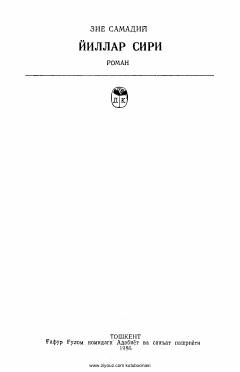

YSShanxayda yashayotgan uyg'ur savdogarining sirlarga boy hayoti haqidagi tarixiy roman.
Ushbu asar XX asr boshlarida Xitoyning Shanxay shahrida yashagan uyg'ur savdogari Yunus boyvachchaning hayoti va sarguzashtlari haqida hikoya qiladi. Roman o'sha davrdagi siyosiy vaziyat, savdo-sotiq muhiti va insoniy munosabatlarning murakkab qirralarini ochib beradi.